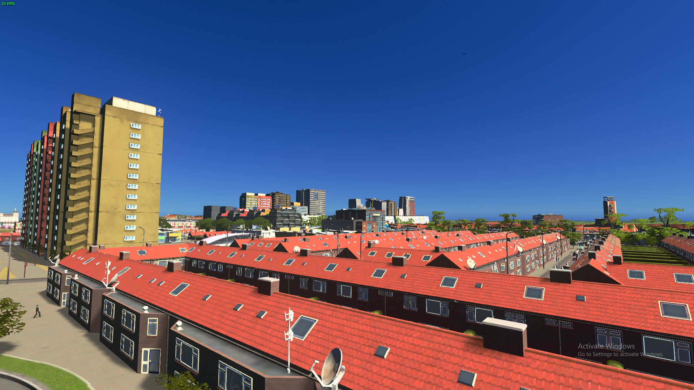
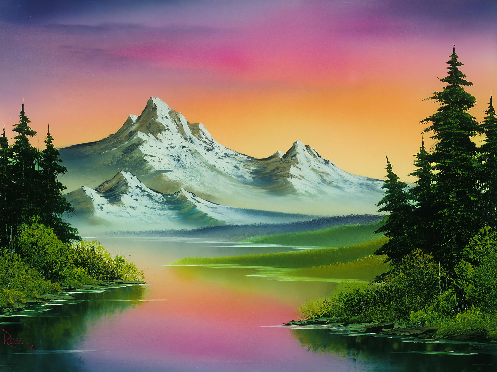
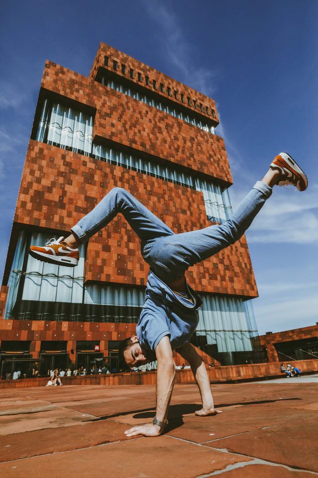
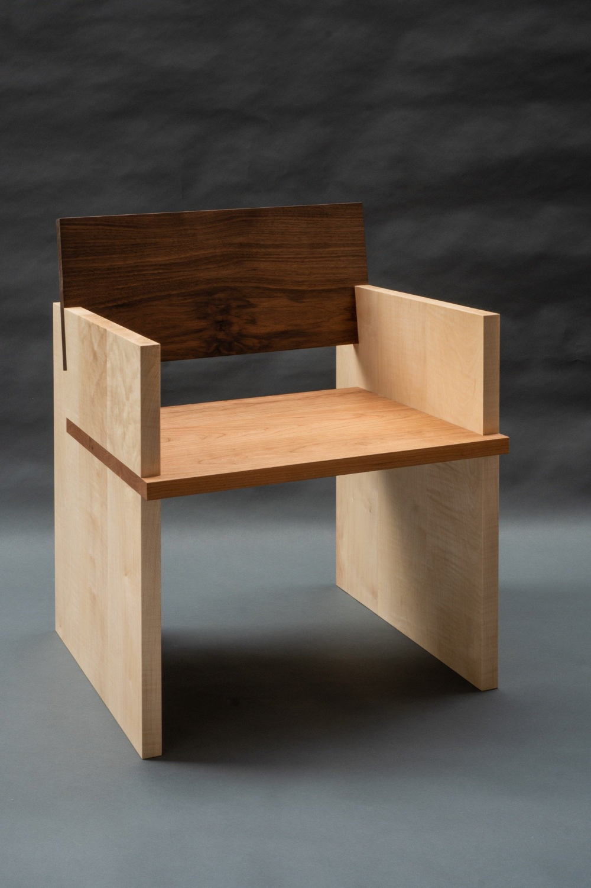
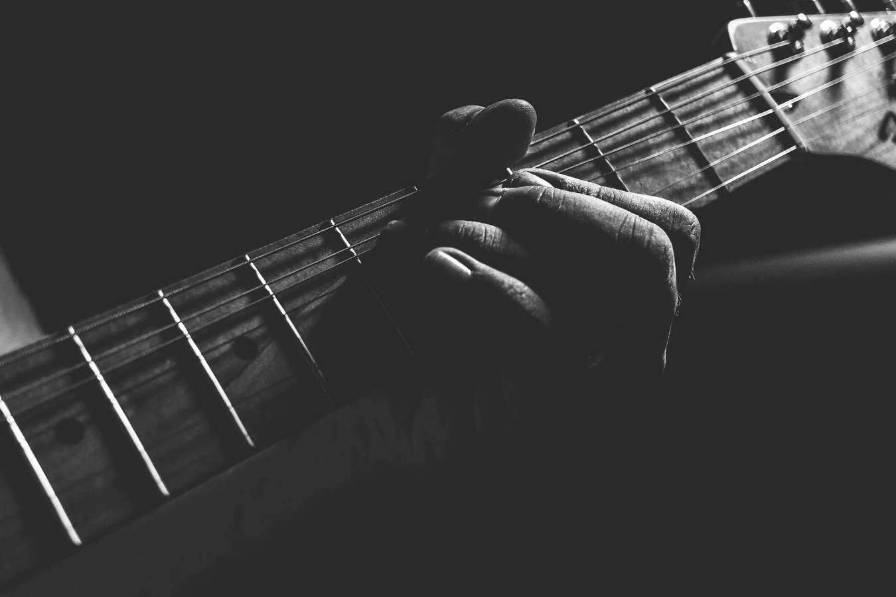
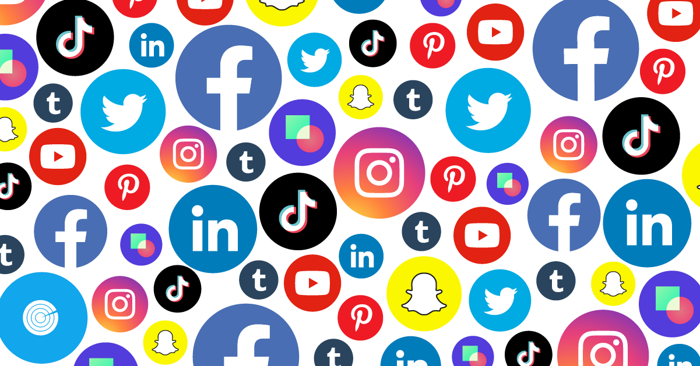
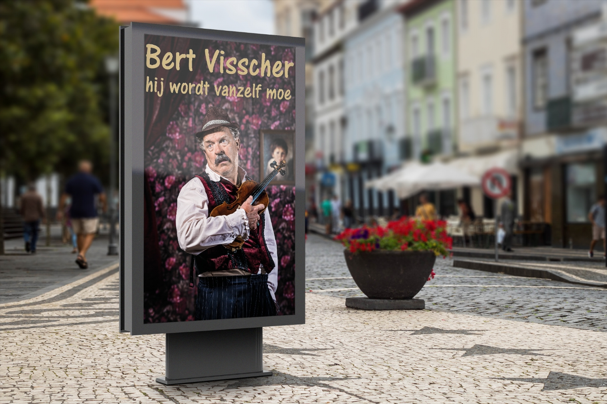

Ik heb al wat ervaring met het vak ckv. Dit komt doordat ik het ook in mavo 3 heb behandeld. Hierdoor heb ik meerdere kunstvormen al behandeld. Ik ben toen naar een voorstelling geweest, ik ben ook naar de blind wall gallary geweest. Als eindproject heb ik in het spel (wat ik liever een simulatie noem) cities skylines een stad gebouwd. Deze keuze heb ik gemaakt omdat ik er zelf al mee bezig was. Ik was eerst erg slecht in het maken van steden en de problemen die daarbij komen. Het was voor mij bijvoorbeeld erg lastig om Bepaalde dingen in de stad te verwerken zoals een centrum, of een binnenplein. Maar door mezelf in te lichten over hoe steden in Nederland gebouwd worden heb ik het voor elkaar gekregen om een mooie stad te maken. Dus tot zo ver mijn ervaring met architectuur.
Beeldende kunst heb ik ook redelijk wat mee te maken gehad. Mijn zusje deed de atelierklas en nam soms wel eens het een en het ander mee naar huis. Ik zit thuis ook heel veel achter de computer, dus ik krijg wel het een en het ander mee. Ik keek bijvoorbeeld best wel wat Bob Ross video’s. Zijn rustgevende stem gemixt met het schrapen van het mes wat hij gebruikte was erg rustgevend voor mij. Maar buiten zijn fijne stem en rustgevende geluiden vond ik het proces wat hij gebruikte om van vormen objecten te maken fascinerend om te zien. Zo fascinerend, dat ik zelf ook een paar keer een kwast vast heb gehad. Natuurlijk waren de eerste paar keren niet heel mooi, maar ik vind zelf dat ik uiteindelijk een best mooi werk heb gemaakt!
Vormgeving is overal. Het zit in meubels, drinkglazen, deuren, instrumenten, alles wat je op noemt, heeft te maken met vormgeving. Het zou dus ook raar zijn, als ik zou zeggen dat ik er nooit mee te maken heb gehad. Mijn kamer staat op zolder. Als ik mijn kamer wil inrichten moet ik dus goed denken aan de vormgeving van bijvoorbeeld mijn kast, of mijn bureau. En omdat we laatst mijn kamer zijn wezen verbouwen, ben ik daar best wel veel mee bezig geweest. Ik moest bijvoorbeeld rekening houden met de lampen. Omdat mijn zolder niet erg hoog was, wilde je ook een lamp die de kamer voldoende kon verlichten, en tegelijk niet te veel van het plafond af zou hangen dat je je hoofd zou stoten. Ook de kast heb ik zelf ontworpen. Dit vond ik achteraf best leuk om te doen, omdat je dan zelf aan je kamer hebt meegeholpen.
Dans heb ik wat minder mee te maken gehad. Dit komt door het gebrek aan interesse en de mensen om mij heen die er ook niet veel mee deden. Wel keek ik vroeger naar het programma ‘Holland’s got talent’ waar er veel dansgroepen voorbij kwamen. Ik was erg gefascineerd door een drietal aan breakdancers (leeftijd 12 tot 16) en heb er veel fragmenten van gekeken. Maar omdat dit al erg lang geleden is kan ik mij er niet veel meer van herinneren.
Design is net als vormgeving overal. De twee hebben veel weg van elkaar, maar design is toch net iets anders. Design gaat dieper in op hoe je iets praktisch vorm kan geven. Het is de kunst om dit te doen, zonder dat het ten koste gaat van de functie. Denk hierbij bijvoorbeeld aan een stoel. Als je stoel niet lekker zit, dan kan hij misschien erg stevig staan, maar niemand die er op wilt zitten.
Zelf heb ik niet zoveel met films. Ik kijk zelf bijna nooit films en ga ook niet vaak naar de bioscoop. Van de films die ik gezien heb, vond ik het belangrijk dat het me laat lachen. Bijvoorbeeld pirates. Als die films een serieuze bedoeling hadden gehad had ik er niks aan gevonden, maar nu het vooral door middel van humor niet heel serieus overkomt, vind ik het wel leuke films.
Muziek is belangrijk voor niet alleen mijzelf, maar ik denk voor iedereen. Ik heb er altijd in gelooft dat het verschil in muziek smaak komt door wat mensen verwachten van de muziek die ze luisteren. Wil je rustig worden? Of wil je juist helemaal los gaan? Houd je meer van melodies? Of spreken de teksten je juist aan? Ik geloof er niet in dat er een muziekstijl echt objectief slecht is. zelf speel ik ook gitaar en een beetje piano. Dit doe ik nu voor 2 jaar. Ik vind het fijn, omdat het me rustig maakt en het me mezelf laat uiten. Ik heb nog niks zelf geschreven.
Fotografie speelt geen (grote) rol in mijn leven. Ik ben meer iemand die gebeurtenissen zelf wilt ervaren en niet door een scherm. Ik snap zelf ook nooit waarom mensen bij optreden vaak hun telefoon pakken; er zijn genoeg mensen die het optreden filmen, je kan die fragmenten zelf op het internet terug vinden, dus bekijk het optreden dan zelf! Fotografie is niet belangrijk voor mij, omdat ik zelf nooit foto’s maak. Ook doet fotografie niet echt wat met me. Tuurlijk vind ik wel eens een mooi plaatje van bijvoorbeeld een zonsopgang, maar de zonsopgang is dan wat mij aanspreekt. Niet zo zeer de fotografie.
Ik zou gek zijn als ik zou zeggen dat nieuwe media niks met mij te maken had. Ik game veel, ik gebruik veel social media en ik kijk veel filmpjes op youtube. Memes zijn bijvoorbeeld een grappige manier waarop mensen met elkaar communiceren en informatie uitwisselen. Social media is het medium voor de memes om mij te bereiken. Ik vind het interessant om te zien wat memes kunnen bereiken. Er zijn meerdere malen verhalen naar buiten gekomen van iemand waar het niet zo goed mee ging. Bijvoorbeeld een kind met kanker. De community van memes ging dit kind massaal steunen en doneren voor de dure operatie die misschien zijn leven kon redden. Dit kind heeft het uiteindelijk gered, en dat vind ik best speciaal.
Ik ben ooit een keer naar het theater geweest. Dat was een optreden van Bert Visscher. Wij keken thuis vaak zijn shows op televisie, en toen we hoorden dat hij een optreden zou geven in het Chassé Theater zijn we naar toe geweest. Ik vond dit erg indrukwekkend. Het was voor mij speciaal om te zien hoe zo’n optreden in zijn werking ging. Ik heb ook erg hard gelachen.
